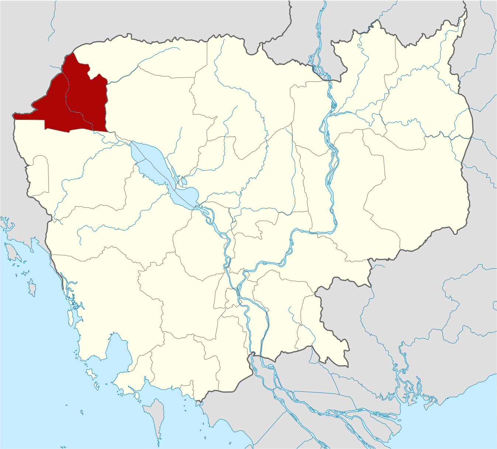
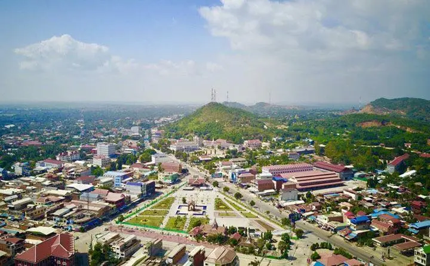
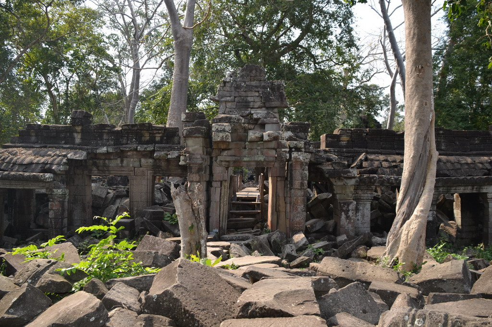

GO HOME
ខេត្តបន្ទាយមានជ័យ
ខេត្តបន្ទាយមានជ័យ គឺជាខេត្តមួយនៃព្រះរាជាណាចក្រកម្ពុជាដែលស្ថិតនៅចុងពាយ័ព្យនៃប្រទេសដែលមានសេដ្ឋ
កិច្ចយ៉ាងសំខាន់មួយរបស់ប្រទេសជាតិ។ ខេត្តនេះមានព្រំខេត្តជាប់ខេត្តឧត្តរមានជ័យ និង ខេត្តសៀមរាបនៅ
ខាងកើត ខេត្តបាត់ដំបងនៅខាងត្បូង និងមានព្រំដែនរួមអន្តរជាតិជាមួយប្រទេសថៃនៅខាងលិច។ ទីរួមខេត្ត
និងទីក្រុងធំបង្អស់គឺក្រុងសិរីសោភ័ណ និងក្រុងប៉ោយប៉ែត។ ខេត្តបន្ទាយមានជ័យគឺជាខេត្តធំបង្អស់ទី១៣
នៃព្រះរាជាណាចក្រកម្ពុជា។ ដោយមានប្រជាជន ៦៧៨០៣៣ នាក់ វាជាប់លេខជាខេត្តធំទី ១០ ប្រចាំប្រទេស។
ខេត្តនេះមានក្រុងចំនួនពីគឺក្រុងសិរីសោភណ្ឌ និងក្រុងប៉ោយប៉ែតនៅប៉ែកខាងលិចនៃខេត្តគឺជាព្រំដែនអន្តរជាតិ
ឆ្លងចូលទៅប្រទេសថៃ។ បន្ទាយមានជ័យគឺជាខេត្តមួយក្នុងចំណោមខេត្តទាំងប្រាំបួនដែលជាប៉ែកភាគនៃដែនជំរក
ជីវមណ្ឌលទន្លេសាប។
|

ខេត្តបន្ទាយមានជ័យ
|

ក្រុងបន្ទាយមានជ័យ
|
រដ្ឋបាលខេត្តបន្ទាយមានជ័យ
ខេត្តបន្ទាយមានជ័យ ស្ថិតនៅ ប្រទេសកម្ពុជា មាន ៧ ស្រុក និង ២ ក្រុង÷
|
លេខកូដស្រុក
|
ឈ្មោះស្រុកជាអក្សរខ្មែរ
|
ឈ្មោះស្រុកជាអក្សរឡាតាំង
|
|
១០២
|
ស្រុកមង្គលបូរី
|
MONGKOL BOREI
|
|
១០៣
|
ស្រុកភ្នំស្រុក
|
PHNOM SRUK
|
|
១០៤
|
ស្រុកព្រះនេត្រព្រះ
|
PREAH NETH PREAH
|
|
១០៥
|
ស្រុកអូរជ្រៅ
|
OU CHROV
|
|
១០៦
|
ក្រុងសិរីសោភ័ណ
|
SEREI SAOPHOAN
|
|
១០៧
|
ស្រុកថ្មពួក
|
THMOR PUOK
|
|
១០៨
|
ស្រុកស្វាយចេក
|
SVAY CHEK
|
|
១០៩
|
ស្រុកម៉ាឡៃ
|
MALAI
|
|
១១០
|
ក្រុងប៉ោយប៉ែត
|
POI PET
|
លក្ខណៈទូទៅ
ឋិតនៅចម្ងាយ៣៥៩គីឡូម៉ែត្រពីរាជធានីភ្នំពេញតាមផ្លូវជាតិលេខ៥ និងមានទីតាំងជាប់នឹងព្រំប្រទល់ខេត្ត
បាត់ដំបង ឧត្ដរមានជ័យ សៀមរាប និងព្រំប្រទល់ថៃ ខេត្តបន្ទាយមានជ័យ កំពុងទទួលបានភ្ញៀវទេសចរ
យ៉ាងកុះករតាម រយៈកាស៊ីណូខ្នាតអន្តរជាតិមួយ ដែលកំពុងបើកឱ្យមានការចូលលេង កម្សាន្តទាំងយប់
ទាំងថ្ងៃ។ តំបន់កាស៊ីណូនេះ ក៏មានរៀបចំជាផ្នែកផ្សេងទៀតដូចជា ភោជនីយដ្ឋាន សណ្ឋាគារ ផ្សារលក់
ឥវ៉ាន់ផងដែរ។ ភ្ញៀវដែលទៅកម្សាន្តនៅទីនោះភាគច្រើនមកពីប្រទេសថៃ ឯភ្ញៀវជនជាតិផ្សេងទៀតពុំសូវ
មាននោះទេ។ បើចំពោះជនជាតិខ្មែរជាអ្នកទេសចរ សាមញ្ញវិញ ពួកគេច្រើនទៅដើម្បីកម្សាន្តភ្នែកតែប៉ុណ្ណោះ
ពុំសូវមានអ្នកដែលទៅ ដើម្បីប្រព្រឹត្តល្បែងស៊ីសងនោះឡើយ។ មិនមែនមានតែតំបន់កម្សាន្តច្រកព្រំដែនលក្ខណ
អន្តរជាតិ ប៉ោយប៉ែតប៉ុណ្ណោះ ទេដែលភ្ញៀវទេសចរណ៍ចាប់អារម្មណ៍នោះ ខេត្តបន្ទាយមានជ័យនៅមានតំបន់
កម្សាន្តមួយចំនួនទៀត ដែលបានទាក់ទាញ និងកំពុង អភិវឌ្ឍដើម្បីទាក់ទាញភ្ញៀវទេសចរទៀតផង។
តំបន់ទេសចរណ៍សក្តានុពល
ប្រាសាទបន្ទាយឆ្មារមានទីតាំងស្ថិតនៅតាមបណ្តោយផ្លូវជាតិលេខ៦៩អា ចម្ងាយប្រមាណ៤គីឡូម៉ែត្រពីទីរួម
ខេត្តបន្ទាយមានជ័យក្នុងស្រុកថ្មពួក តំបន់រមណីយដ្ឋានប្រវត្តិសាស្ត្រ ប្រាសាទបន្ទាយឆ្មារបានកសាងឡើង
ដោយព្រះបាទជ័យវរ្ម័នទី៧ ក្នុងចន្លោះ សតវត្សទី១២ និង១។ តំបន់នេះត្រូវរងការបំផ្លិចបំផ្លាញដោយសារ
សង្គ្រាមដែលបណ្ដាលឱ្យប្រាសាទមួយចំនួនធំត្រូវ បាក់បែកខ្ទេចខ្ទី នៅសល់តែថ្មរាយប៉ាយពាសពេញដី
មិនតែប៉ុណ្ណោះនៅមានពួកចោរបានលួចយករូបចម្លាក់ផ្សេងៗ ពីប្រាសាទទៅលក់ឱ្យឈ្មួញជនជាតិប្រទេសថៃ
ទៀតផង។ ភាពល្បីល្បាញនៃប្រាសាទនេះបានធ្វើឱ្យពីមួយថ្ងៃទៅមួយថ្ងៃមានអ្នក ទេសចរបរទេសចូលទស្សនា
កាន់តែច្រើនឡើងៗ ដែលសក្ដានុពលនេះបានធ្វើឱ្យអជ្ញាធរគ្រប់គ្រងប្រាសាទមានការចាប់ អារម្មណ៍ ហើយ
ព្យាយាមរៀបចំបណ្ដាប្រាសាទដទៃទៀតនៅក្នុងខេត្តឱ្យកាន់តែគួរឱ្យទាក់ទាញ ជាមួយនឹងការជួសជុល
ហេដ្ឋារចនាសម្ព័ន្ធ ផ្លូវថ្នល់ដើម្បីបង្កលក្ខណៈងាយស្រួលដល់ទេសចរក្នុងការទៅកម្សាន្ត។ ប្រាសាទដែលខេត្តនេះមាន
គម្រោងរៀបចំជួសជុលលម្អឡើងវិញមានដូចជា ប្រាសាទបន្ទាយទ័ព ប្រាសាទព្រះឈរ ប្រាសាទប្រាំជាដើម[១]។
|

ប្រាសាទបន្ទាយឆ្មារដែលស្ថិតនៅខេត្តបន្ទាយមានជ័យ
|
ប្រវត្តិ
តំបន់នេះជាផ្នែកមួយនៃអាណាចក្រខ្មែរ ដោយសារនៅភាគខាងជើងខេត្តគេឃើញមាន ប្រាសាទបន្ទាយឆ្មារ ដែលគេជឿ
ថាត្រូវបានសាងឡើងនៅរវាងសតវត្សទី១២ និង សតវត្សរ៍ទី១៣។ ប្រាសាទដែលគេស្គាល់តិចតួចជាងគេគឺ ប្រាសាទបន្ទាយ
នាង និង ប្រាសាទបន្ទាយទ័ព។ នៅសតវត្សទី១៧ សៀមបានឈ្លានពានកាន់កាប់ប្រទេសកម្ពុជា ហើយបានប្រែឈ្មោះខេត្ត
បន្ទាយមានជ័យជាខេត្តស៊ីសុផុន។ នៅឆ្នាំ ១៩០៧ សៀមបានប្រគល់ខេត្តនេះទៅបារាំង ដែលក្រោយមកត្រូវបានបញ្ចូល
ជាដីខេត្តបាត់ដំបងវិញ។
នៅឆ្នាំ ១៧៩៥ សៀមបានត្រួតត្រាលើព្រះរាជាណាចក្រកម្ពុជាភាគខាងលិច ហើយបានធ្វើឱ្យតំបន់នោះក្លាយជា
ខេត្តសៀមនៃកម្ពុជាភាគខាងក្នុងដែលមានទីរដ្ឋបាលនៅព្រះដំបង ឬ ខេត្តបាត់ដំបង។ ខេត្តនេះបានបន្តក្រោមការ
ត្រួតត្រារបស់សៀមរហូតដល់ឆ្នាំ១៩០៧ នៅពេលនោះសៀមបានជួញប្រែនៅខាងក្នុងកម្ពុជាដើម្បីយកទំនិញត្រឡប់ទៅត្រាច
និង ដានជ័យវិញ។ ក្នុងឆ្នាំដដែល ព្រះបាទស៊ីសុវត្ថិបានសំរេចព្រះទ័យបំបែកខេត្តកម្ពុជាភាគខាងក្នុងដែលត្រឡប់មកវិញ
ទៅជាខេត្តបាត់ដំបង (ដែលរួមមានសិរីសោភ័ណ) និងខេត្តសៀមរាប។ នៅគ្រាដែលថៃបានបញ្ចូលកម្ពុជាប៉ែកខាងលិចជា
ទឹកដីរបស់ខ្លួនឡើងវិញ នៅឆ្នាំ១៩៤១ សិរីសោភ័ណបានបំបែកចេញពីខេត្តបាត់ដំបង និងមានទីរួមខេត្តរដ្ឋបាលនៅខេត្ត
វិបុលសង្គ្រាមដែលបានបន្តរហូតដល់ឆ្នាំ១៩៤៦ នៅពេលដែលតំបន់នោះទាំងស្រុងបានបង្វែរត្រឡប់មកក្រោមការគ្រប់គ្រង
របស់បារាំង។
នៅចន្លោះពីឆ្នាំ១៩៧០ ដល់ឆ្នាំ១៩៨០ ខេត្តបន្ទាយមានជ័យគឺជាខ្សែត្រៀមជួរមុខក្នុងការប្រយុទ្ធគ្នាជាច្រើន ហើយសង្គ្រាម
បានធ្វើឱ្យវាក្លាយជាខេត្តមួយក្នុងចំណោមខេត្តទាំងបីដែលសម្បូរគ្រាប់មីនជាងគេបង្អស់ក្នុងប្រទេសកម្ពុជារួមជាមួយនឹងនឹង
ខេត្តប៉ៃលិន និងបាត់ដំបង។[២]
នៅឆ្នាំ ១៩៨៨ ខេត្តបន្ទាយមានជ័យត្រូវបានបំបែកចេញពីខេត្តបាត់ដំបង ដោយមានស្រុកដំបូង៥គឺ ស្រុកមង្គលបុរី
ស្រុកថ្មពួក ស្រុកសិរីសោភ័ណ ស្រុកព្រះនេត្រព្រះ និងស្រុកភ្នំស្រុក។
ប្រជាសាស្ត្រ
ខេត្តបន្ទាយមានជ័យមានប្រជាជនសរុប ៨១៦ ៣៨២ ឬ ៥,២៤២%នៃប្រជាជនកម្ពុជាសរុប(ទិន្នន័យរដ្ឋាភិបាលកម្ពុជាឆ្នាំ២០០៧)។
ក្នុងនោះមានបុរស ៤០២ ២០១ (ត្រូវជា៤៩,១១%) និងស្ត្រី ៤១៤ ១៨១ (ត្រូវជា៥០,៨៩%)។ អត្រាកំនើនប្រជាជនស្មើនឹង ៥,៩៣%។
ប្រជាជនខេត្តបន្ទាយមានជ័យ៩៣%ជាកសិករ ៥%ជាពាណិជ្ជករ ១,១៧%ជាអ្នកនេសាទ និង ០.៨៣%ទៀតជាមន្ត្រីរាជការ។
សេដ្ឋកិច្ច
សេដ្ឋកិច្ចខេត្ត៩៣%ពឹងផ្អែកលើកសិកម្មនិងនៅសល់៧%ទៀតគឺការនេសាទនិងពាណិជ្ជកម្ម។ ដោយសារតែខេត្តនេះមានព្រំដែនជាប់នឹង
ប្រទេសថៃ អាជីកម្មបនល្បែង (កាស៊ីណូ) កំពុងតែរីកដុះដាលយ៉ាងខ្លាំង ដែលកំពុងក្លាយជាប្រភពចំនូលដ៏សំខាន់សំរាប់ខេត្ត។
-ផ្សារ៖ កណ្ដាលហ៊ុយគា គុត្តសត ចំការគ ជប់វ៉ារី អគ្គ ថ្មពួក ទឹកថ្លា និមិត្ត បន្ទាយឆ្មារ បន្ទាយនាង ប៉ោយប៉ែតថ្មី ភ្នំតូច ភ្នំធំ
ភ្នំស្រុក មង្គល មង្គលបុរី ម៉ាឡៃ រលួស រហាត់ទឹក រ៉ាថ្មី រាត្រី ហ៊ុយឡេង សិរីសោភ័ណ សែនជ័យដីថ្មី(សហគមន៍) សឿ ស្វាយចេក
អូរស្ងួត អូរអំបិល
-ផ្សារធ្លាប់មាន៖ កណ្ដាល